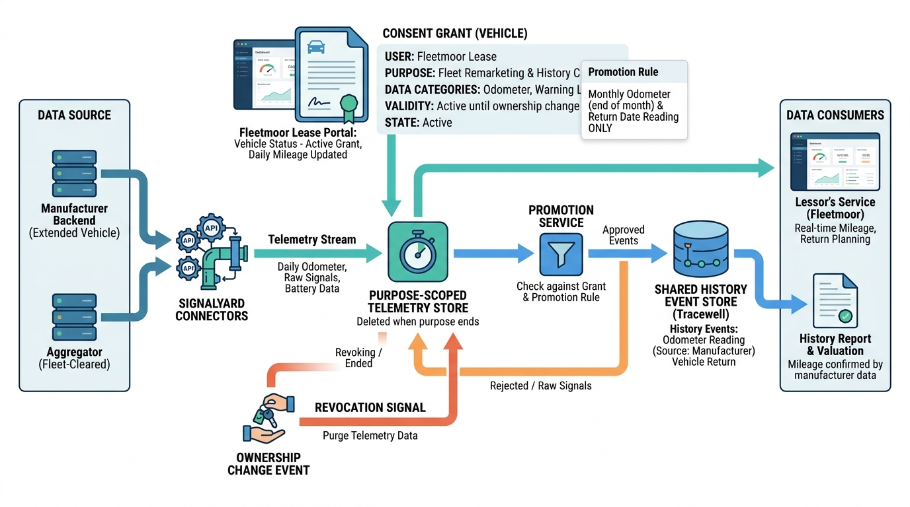

Part III — VALUE: Market Data, Valuation and Condition
Data From the Car Itself: Connected Vehicles, Telematics and the EU Data Act

Image generated by Google Gemini (gemini-3-pro-image-preview)
Part III — VALUE: Market Data, Valuation and Condition

Image generated by Google Gemini (gemini-3-pro-image-preview)